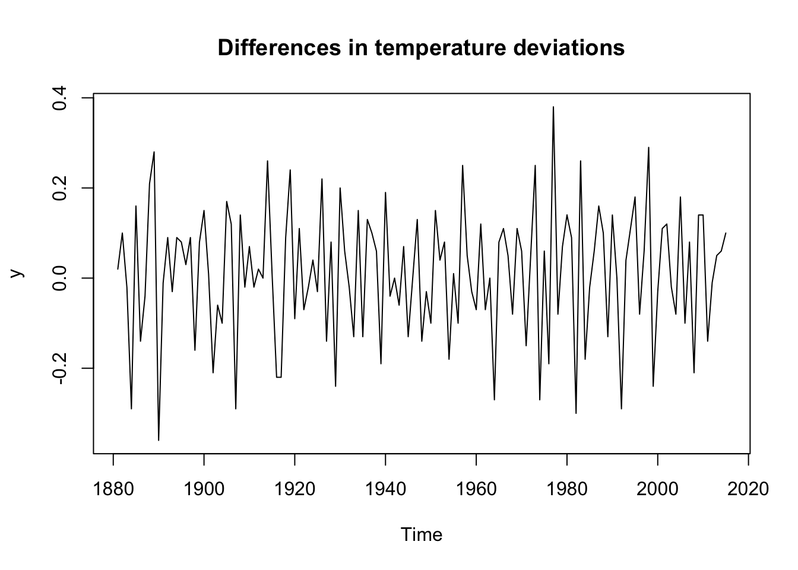

Chapter 4 Time Series
4.1 Example
Suppose we have data on global mean land temperature deviations (from 1951-1980 average). Let’s see what this data looks like.
How could we model this response. Given we only have one tool in our tool box, let’s use it and fit a simple linear regression model using time as the predictor.
We can look at the residuals from this model as a quick diagnostic.
Perhaps we should use a time series model instead in which current values of the series are modelled as a function of past values. That is,
\[\begin{equation} y_t = \delta + \phi y_{t-1} + \epsilon_t. \tag{4.1} \end{equation}\]
In order to satisfy the assumptions of such a model, however, we need our time series to be (weakly) stationary. A series is said to be (weakly) stationary if it satisfies the following properties:
- The mean is the same for all \(y_t\).
- The variance of is the same for all \(y_t\).
- The covariance (and also correlation) between and is the same for all at each lag \(h = 1, 2, 3\), etc.
Does our time series satisfy this condition? Maybe if we do a transformation, we can satisfy the condition. Let’s take the diff. That is, let,
\[\begin{equation} x_t = y_t - y_{t-1}. \end{equation}\]
Let’s examine a plot of these differences.

This looks decently stationary. Let’s fit a model of the form (4.1) to the differences data. This can be achieved with the arima function.
m0 = arima(diff(globtempl), order = c(1,0,0))
#summary(m0)Let’s look at the predicted versus actual values from this model.
This certainly looks like an improvement over linear regression!
4.2 Autocorrelation
A central concept in time series analysis is autocorrelation. This is the correlation between \(y_t\) and its lagged value. For a lag of \(h\), this is the correlation between \(y_t\) and \(y_{t-h}\). For the differenced series above, this can be found using the acf function.
4.3 Exercises 7
Write your own program to compute (part 1) and plot (optional part 2) the autocorrelation function of a given time series, for a specified number of lags.
The autocorrelation for a time series \(y\) at lag \(k\) is:
\[\begin{equation} r_k = \frac{ \sum_{t = k + 1}^{T} (y_t - \bar{y})(y_{t-k} - \bar{y}) }{\sum_{t=1}^T (y_t - \bar{y})^2 } \end{equation}\]
As an example, the code below generates the lag 1 autocorrelation for a time series \(y\):
# simulate time series data from an AR(1) model
y = arima.sim(n=10, list(ar = c(.9), sd = 0.5))
# split into two vectors; one that starts one lag value late (late1)
# and one that ends one lag value early (early1)
late1 = as.numeric( window(y, start = 2))
early1 = as.numeric ( window(y, end = 9) )
ybar = mean(as.numeric(y))
sum ( (late1 - ybar ) * (early1 - ybar ) ) / ( sum ( (y - ybar)^2 ) )## [1] 0.5773614# check using builtin function: (acf(y, type = "correlation"))For your function, accept two arguments: the lag value and the time series. Output the acf for the given lag. Once you complete this, optionally, use that function in a new function to plot the first 5 \(r_k\) values using barplots. Compare with acf.